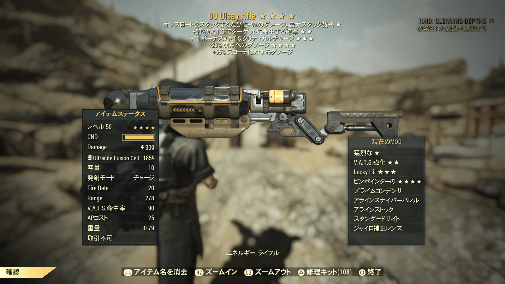

ウルトラサイト・レーザーガン
DATE: 2025/12/16
1. 特性
AER-9型レーザーガンにウルトラサイトの結晶を収束アレイとして使用したもので、特徴的な黄緑色のビームを発射します。
改造によってライフル化する事も可能です。
2. 設計図
レーザーガンの設計図は、ブラザーフッド・ベンダー（ホワイトスプリング・リゾート）またはベンダーボット・フェニックス（ワトガ・ショッピングプラザ）から購入できる場合があります。
3. 注意点
倒された敵は灰の山になることがあります。
クリティカルヒットで仕留められた敵は必ず灰になります。
感想

ウルトラサイトレーザーガンは非常に強力な武器です。
特に構成とPerkを詰めた構成は現環境においてかなり強い武器であり、普段使いの武器やレイドステージ4の武器として活躍します。
単発のエネルギーガンが好きでIntが高い人には是非一度手にとって使ってもらいたい武器です。
もしかしたら貴方の相棒になる可能性は高いです。
特に構成とPerkを詰めた構成は現環境においてかなり強い武器であり、普段使いの武器やレイドステージ4の武器として活躍します。
単発のエネルギーガンが好きでIntが高い人には是非一度手にとって使ってもらいたい武器です。
もしかしたら貴方の相棒になる可能性は高いです。
This article uses material from the “Endor” article on the Star Wars wiki at Fandom and is licensed under the Creative Commons Attribution-Share Alike License.